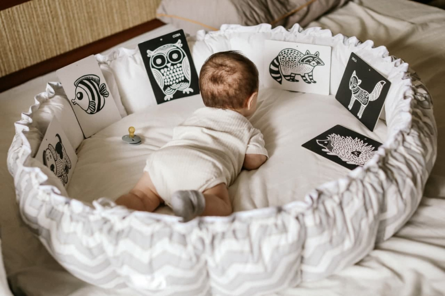

дети
игрушки
советы
В избранное
Топ 3 развивающих игрушек


Веселье с пользой для малыша!
1. Пистолет

Hover Shot - веселая игра для детей. Ваш ребенок наконец отвлечется от компьютера и телефона! В Hover Shot
можно играть вдвоем. Пусть дети учатся делиться, укрепляют дружбу и развивают здоровый дух соперничества.
Кроме этого, эта игра улучшит остроту зрения, скорость реакции и меткость. Игрушечное оружие отлично ложится в
руку, подходит для динамичной игры.
В Hover Shot можно играть на улице, на свежем воздухе. В комплекте идет два бластера, патроны - 10 шт., шарики
для мишени - 10 шт. и устройство для мишени, которое работает как от розетки, так и от батареек - 4 шт. АА.,
также идущих в комплекте.
2. Желтые сортеры

Hover Shot - веселая игра для детей. Ваш ребенок наконец отвлечется от компьютера и телефона! В Hover Shot можно играть вдвоем. Пусть дети учатся делиться, укрепляют дружбу и развивают здоровый дух соперничества. Кроме этого, эта игра улучшит остроту зрения, скорость реакции и меткость. Игрушечное оружие отлично ложится в руку, подходит для динамичной игры.
В Hover Shot можно играть на улице, на свежем воздухе. В комплекте идет два бластера, патроны - 10 шт., шарики для мишени - 10 шт. и устройство для мишени, которое работает как от розетки, так и от батареек - 4 шт. АА., также идущих в комплекте.
3. Красные сортеры
Hover Shot - веселая игра для детей. Ваш ребенок наконец отвлечется от компьютера и телефона! В Hover Shot можно играть вдвоем. Пусть дети учатся делиться, укрепляют дружбу и развивают здоровый дух соперничества. Кроме этого, эта игра улучшит остроту зрения, скорость реакции и меткость. Игрушечное оружие отлично ложится в руку, подходит для динамичной игры.
В Hover Shot можно играть на улице, на свежем воздухе. В комплекте идет два бластера, патроны - 10 шт., шарики для мишени - 10 шт. и устройство для мишени, которое работает как от розетки, так и от батареек - 4 шт. АА., также идущих в комплекте.
4. Бизимяч

Hover Shot - веселая игра для детей. Ваш ребенок наконец отвлечется от компьютера и телефона! В Hover Shot можно играть вдвоем. Пусть дети учатся делиться, укрепляют дружбу и развивают здоровый дух соперничества. Кроме этого, эта игра улучшит остроту зрения, скорость реакции и меткость. Игрушечное оружие отлично ложится в руку, подходит для динамичной игры.
В Hover Shot можно играть на улице, на свежем воздухе. В комплекте идет два бластера, патроны - 10 шт., шарики для мишени - 10 шт. и устройство для мишени, которое работает как от розетки, так и от батареек - 4 шт. АА., также идущих в комплекте.
5.Детское пианино
Hover Shot - веселая игра для детей. Ваш ребенок наконец отвлечется от компьютера и телефона! В Hover Shot можно играть вдвоем. Пусть дети учатся делиться, укрепляют дружбу и развивают здоровый дух соперничества. Кроме этого, эта игра улучшит остроту зрения, скорость реакции и меткость. Игрушечное оружие отлично ложится в руку, подходит для динамичной игры.
В Hover Shot можно играть на улице, на свежем воздухе. В комплекте идет два бластера, патроны - 10 шт., шарики для мишени - 10 шт. и устройство для мишени, которое работает как от розетки, так и от батареек - 4 шт. АА., также идущих в комплекте.
6. Карточки ВеркаКит

Hover Shot - веселая игра для детей. Ваш ребенок наконец отвлечется от компьютера и телефона! В Hover Shot можно играть вдвоем. Пусть дети учатся делиться, укрепляют дружбу и развивают здоровый дух соперничества. Кроме этого, эта игра улучшит остроту зрения, скорость реакции и меткость. Игрушечное оружие отлично ложится в руку, подходит для динамичной игры.
В Hover Shot можно играть на улице, на свежем воздухе. В комплекте идет два бластера, патроны - 10 шт., шарики для мишени - 10 шт. и устройство для мишени, которое работает как от розетки, так и от батареек - 4 шт. АА., также идущих в комплекте.
7. Такане мяч

Hover Shot - веселая игра для детей. Ваш ребенок наконец отвлечется от компьютера и телефона! В Hover Shot можно играть вдвоем. Пусть дети учатся делиться, укрепляют дружбу и развивают здоровый дух соперничества. Кроме этого, эта игра улучшит остроту зрения, скорость реакции и меткость. Игрушечное оружие отлично ложится в руку, подходит для динамичной игры.
В Hover Shot можно играть на улице, на свежем воздухе. В комплекте идет два бластера, патроны - 10 шт., шарики для мишени - 10 шт. и устройство для мишени, которое работает как от розетки, так и от батареек - 4 шт. АА., также идущих в комплекте.